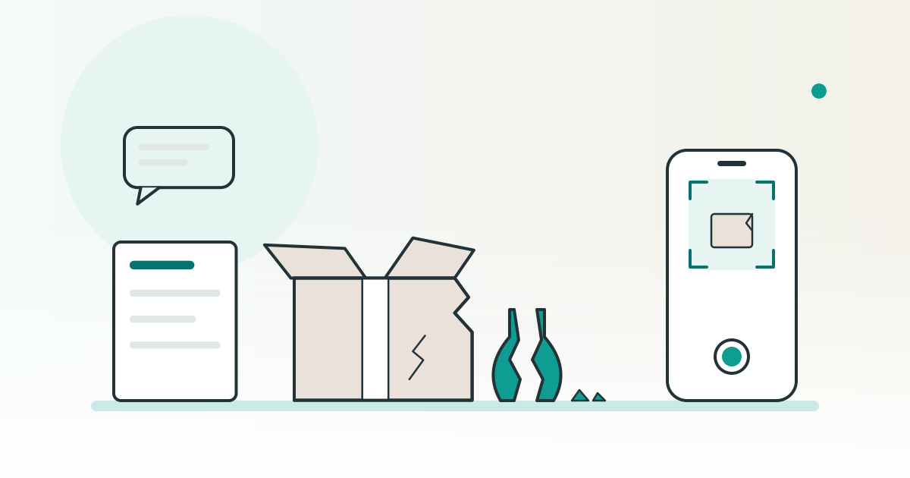

SHOPKIT コラム
配送中に雑貨が壊れて届いたら写真・注文情報・連絡を整理する

雑貨が壊れて届いたと連絡を受けたら、注文と荷物を特定し、安全に確認できる写真と、やり取りの経過を残しましょう。配送中に起きたと原因を決める前に、見えている状態と、これから確かめることを分けます。一人でネットショップを始める方に向けて、破損の連絡を受けた店側の記録と対応の進め方を紹介します。
この記事は、完成品のネットショップを販売している SHOPKIT が書いています。
破損の連絡を受けたら、注文と届いた荷物を照らす
最初の記録は、連絡の日時、注文番号、届いた商品、荷物の問い合わせ番号を対応させます。お客様から届いた内容を保存し、店側で注文の情報から分かることは先に調べましょう。すでに伝えてもらった情報を、重ねて尋ねないためです。
同じ注文の商品を別々の荷物で送っている場合は、どの荷物に入った商品かまで記録します。セットの雑貨なら、全体の呼び名に加え、壊れたと連絡を受けた部分の名前をそろえましょう。
届いた日、お客様が破損に気付いた状況、外箱が残っているかも、分かる範囲で聞き取ります。分からない項目を想像で埋めず、後で確かめる項目として残してください。部品の不足や違う商品の到着は、破損の状況と分けて記録します。
写真などをそろえる作業と、配送会社への連絡は並行して進めます。調査が終わるまで待つことを前提にせず、使った配送の約款で、連絡する人・窓口・申し出の期限を早めに確かめましょう。
商品と箱の状態は、写真と言葉で記録する
写真は、何が写っているかを短い説明と組にして残します。必要な写真は配送会社などの案内でも確かめますが、まずは手元にある写真を受け取り、追加してほしい部分だけを整理しましょう。
| 確認するもの | 写真に添える情報 | 記録で分けること |
|---|---|---|
| 商品の全体 | 注文した品番と、写真の商品・部品の名前 | セット全体と、壊れた部分 |
| 傷や欠けのある部分 | ふち、底、取っ手など、位置が分かる説明 | 見えている状態と、原因についての判断 |
| 外箱 | へこみ、濡れ、破れなど、見える状態 | 箱の傷みと、商品自体の傷み |
| 箱の内側と包み | 開封時の商品の位置と、残っている緩衝材 | 届いたままの写真と、取り出した後の写真 |
ガラスや陶器の破片があるなど危険な状態なら、撮影のために素手で触ったり、箱を組み直したりしてもらわないようにします。安全に確認できない部分は、確認できないまま記録して相談しましょう。
箱や包みを残してもらう必要があるか、回収の有無は、配送会社などの案内を確かめて伝えます。すでに片付けた物があれば、その状況も記録し、お客様を責めずに、残っている情報で確認を進めてください。
お客様に伝えることと、確かめ中のことを分ける
連絡を受け取ったこと、次に何を確かめるか、次の連絡予定を分けて伝えます。最初の返信の一般的な組み立て方は、問い合わせへの返信を扱う記事に任せ、ここでは破損に関する記録をそろえます。
| 記録の区分 | 残す内容 | 次にすること |
|---|---|---|
| 分かっていること | 注文の商品、届いた日、写真で見える破損の状態 | お客様の説明と対応させて保存する |
| 回答を待っていること | 照会先、照会した日、質問と受付番号 | 回答待ちの項目と、次の連絡予定を見直す |
| 対応を決めたこと | お客様に案内した内容と、返金や交換などの手配状況 | 案内済みと、手配済み・完了を分けて記録する |
「配送中に割れた」「返金できる」「交換品をすぐ送れる」と、原因や手配を確かめる前に伝えないようにしましょう。交換を検討するときも、同じ商品の在庫、発送の見通し、お客様の希望を整理してから案内します。
配送会社からの回答待ちが続く場合も、お客様への連絡まで止めないようにします。約束した連絡時点で分かったことと、まだ回答を待っていることを伝え、次にいつ連絡するかを記録しましょう。
配送会社への問い合わせに要る情報をそろえる
照会には、荷物の情報と状態、問い合わせたい内容をまとめます。店が荷物の発送を別の相手へ頼んでいた場合は、配送の契約をした相手が誰か、誰から申し出るかを先に確かめましょう。お客様に連絡先を渡すだけで、店の記録を終えないようにします。
- 荷物と連絡先を特定する
問い合わせ番号、発送日と届いた日、荷送人・荷受人に関する必要な情報をそろえます。注文の情報をすべて送る前に、窓口が求める項目を確かめます。
- 状態と質問を分けて伝える
商品の破損と箱の状態、写真があるかを整理します。保管する物、現物を確認する方法、返送や回収の手配、必要な書類を質問としてまとめましょう。
- 回答と実際の手配を分けて残す
受付番号、回答を受けた日、案内された手順を保存します。回収の案内が来たことと、実際に回収が済んだことは、別の記録にします。
国土交通省の標準宅配便運送約款（PDF）には、荷物の損傷を通知する期間と、その適用を除く場合や期間を延ばす場合の規定があります。責任を負う条件や免責についての規定もあります。自分が利用した配送の約款で、該当する条件と期限を窓口へ確かめ、記録がすべてそろうのを待たずに連絡しましょう。事故の通知として必要な内容と連絡方法、受け付けた記録の残し方も窓口で確認します。
箱の外側の状態や写真だけで、どこで壊れたのかを決めつけずに照会します。連絡した事実と、事故原因や補償についての回答は分けて残してください。
関連：ネットショップの送料の決め方｜発送方法・梱包と先に伝えること
返金や交換の決まりは、お店の表示と約款で確かめる
お客様への対応と、配送会社からの補償についての確認を分けて整理します。販売時の表示、注文の内容、商品の状態、お客様の希望をそろえ、返金や交換をどう進めるかを確かめます。
消費者庁の特定商取引法ガイド「通信販売」は、返品に関する特約の内容に加え、引き渡す商品の種類や品質が契約と合わない場合の販売業者の責任について、定めがあればその内容も広告の表示事項に挙げています。破損の相談では、お店の表示と契約の内容を取り出し、どの条件を確かめているかを分けましょう。
返金や交換が必要か、誰が費用を負担するかは、一律に決めません。「返品不可」という表示だけで結論を出さず、破損した商品の引き渡しについても判断が要る場合は、公的な相談窓口や専門家へ確認してください。返品の条件を書く方法は、別の記事で紹介しています。
関連：ネットショップの返品の決まり｜通信販売にクーリング・オフは無い？返品特約の書き方
お店を買って始めるときに、破損の受付の流れを決めておく
購入前には、破損の連絡を誰が受け、どの相手へ照会するかを聞きましょう。商品を選ぶときに、仕入れ先、発送の手配をする相手、事故時の問い合わせ先を区別しておくためです。
SHOPKITの2026年10月15日時点のサービスページは、商品と店舗を整えて販売を始める準備をした状態でお渡しすると案内しています。お渡しする内容には、お店一式と仕入れの情報、運営・集客のマニュアルが含まれます。出典：お渡しするもの。
検討するときは、破損の受付に必要な情報、窓口と連絡の順番、買った後に自分が判断・連絡する場面を説明してもらいましょう。マニュアルが付くことから、個別の返金や事故の解決まで済むと考えず、対応範囲を購入前に確かめます。
関連：雑貨屋のネットショップを開くには｜品ぞろえと商品の表示・安全の確かめ方
よくある質問
雑貨の破損の連絡を受けたら、写真が全部そろうまで待ちますか？
写真などを集める作業と、配送会社への連絡は並行して進めましょう。利用した約款の窓口や申し出の期限を早めに確かめます。危険な状態での撮影や、箱の組み直しは求めないようにします。
商品の写真だけで、配送中に壊れたと判断できますか？
写真で見える状態と、破損の原因の判断は分けます。箱や包み、届いたときの状況も分かる範囲で整理し、配送会社などへ照会しましょう。
壊れた雑貨の外箱を、お客様が処分していたらどうしますか？
外箱が残っていないことを記録し、手元にある写真や商品の状態を整理して相談します。お客様を責めず、追加で必要な情報や確認の方法を窓口に確かめましょう。
配送会社へ問い合わせたら、お店の破損対応は終わりですか？
問い合わせた記録、受けた回答、お客様へ案内した内容、実際の手配を分けて残します。回答待ちでもお客様への連絡を止めず、次の連絡予定を記録しましょう。
※ この記事のSHOPKITのお渡しするものは、2026年10月15日時点のサービスページの記載です。公的資料は2026年10月26日に確認しました。個別の事故の責任や返金・補償の扱いは、契約と利用する配送の最新の約款、関係する窓口で確かめてください。